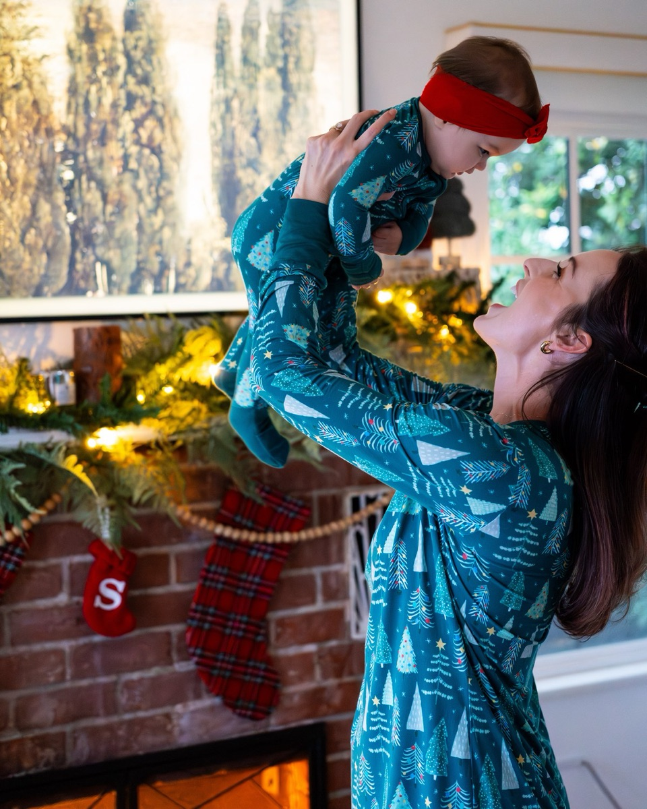
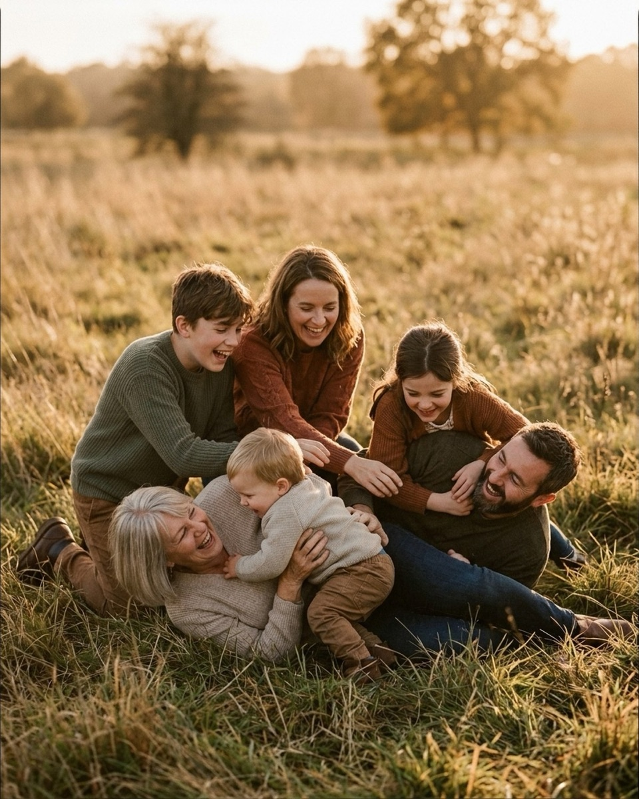
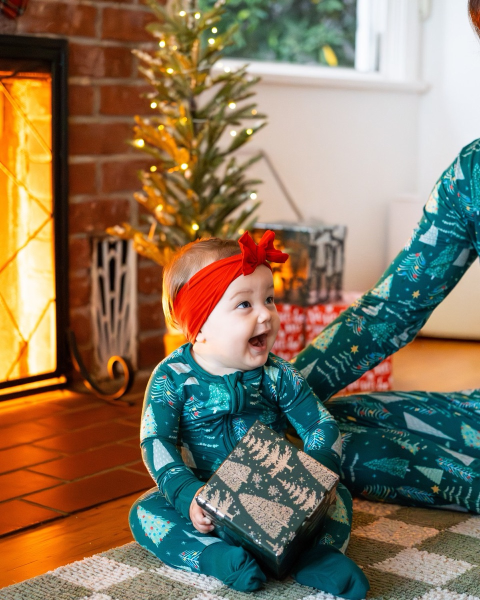

20 things to say to get natural smiles at a family session
The right words get you a real laugh in one take; “smile” gets you twenty seconds of clenched teeth — here are 20 lines from the Prompted catalog, grouped by when to use them.
Every family photographer has heard the same instruction fail the same way: "everyone smile." Say it and you get twenty teeth clamped into place, a toddler who has just learned the word "cheese" is a trap, and a dad whose grin looks like a hostage photo. The problem was never the family's ability to be happy together — it's that "smile" asks people to perform an expression instead of feel one. A real smile is a byproduct, not a request. It shows up when someone gets tickled, surprised, teased, or quietly relieved that nobody is watching them anymore. That means the fastest route to natural smiles at a family session isn't a better pose — it's a better sentence. Below are 20 lines pulled straight from the Prompted catalog, organized by where they work best in a session, from the first awkward minute to the last five when everyone's patience is running thin.

Getting the whole group loose
The first five minutes of any family session are the stiffest, because everyone is still bracing for "smile." These lines take the pressure off the camera entirely and put it on each other — which is where a real expression actually comes from.
1. Take the eye contact pressure off
Nobody has to look at the camera. Look at whoever you love most in this group.
Nervous clientFrom the pose “Group walk hold hands”
Use this in the first minute, especially with a family that's told you they hate having their picture taken. It removes the one instruction that makes people stiffen.
2. Ask for one breath, not one expression
Squeeze in close and take one big family breath together.
CalmFrom the pose “Picnic blanket”
Good right after you've physically arranged a group, when everyone is still holding the posture you gave them. A shared breath resets their shoulders before you shoot.
3. Give them a fake deadline to forget
Pretend it's Sunday morning and nobody has anywhere to be.
Nervous clientFrom the pose “Tree line lean”
Use it with families who arrive rushed from the car, still checking watches. It gives them permission to slow their faces down before you ask for anything else.
4. Let the baby do the relaxing
Breathe in, drop your shoulders, and just look down at that sweet face.
CalmFrom the pose “Hip cradle gaze”
Works anytime a parent is over-aware of the lens. Redirecting their focus to the baby erases the stiff, camera-ready face almost instantly.
5. Trade the lens for a promise
You don't need to look at the camera at all. Just watch how excited she gets.
Nervous clientFrom the pose “Rug gift watch”
A reliable opener when a toddler is mid-tantrum recovery or overstimulated. It tells the parent exactly where to put their attention instead of guessing.
Cracking up the kids
Kids don't fake laugh convincingly, which is exactly why they're the easiest members of any family to get a genuine reaction from — you just have to give them something worth reacting to. These lines work because they're small dares or games, not instructions to perform.
6. Make the parent the punchline
Give her a little airplane lift and make your absolute best funny noise.
PlayfulFrom the pose “Mantel overhead lift”
Use with infants and young toddlers when you need a big, open laugh rather than a smile. The noise matters more than the lift — coach parents to commit to it.
7. Hand out a silly assignment
Everyone point at the person most likely to steal dessert.
PlayfulFrom the pose “Toddler toss”
Great for school-age kids who roll their eyes at "smile" but can't resist an inside joke about a sibling. It also gets adults laughing at their own kids' reactions.
8. Turn a lift into a countdown
Swing the little one on every third step — one, two, wheee.
PlayfulFrom the pose “Sandwich hug”
Use for toddlers who are already walking well between two parents. The anticipation of the "wheee" usually produces a bigger laugh than the swing itself.
9. Give the kids a job that embarrasses dad
Kids, bury Dad's feet. Dad, act like you haven't noticed.
PlayfulFrom the pose “Piggyback parade”
Best at the beach or in sand or leaves where there's something to actually bury feet in. The joke is in Dad's exaggerated "obliviousness," so brief him separately if he's shy.
10. Start a chain reaction
Everybody tickle the person on your left. Go.
PlayfulFrom the pose “Nose boop line”
Use once the family is already standing in a line or huddle. It only takes one genuine squeal to get the rest of the group laughing along.
Want the fall mini session shot list?
About 25 poses grouped by family size, each with the words to say. Free PDF.
One email to confirm, one with the PDF. Unsubscribe any time.
11. Give the countdown a real launch
Give the little one a countdown, then launch. I'll be ready.
PlayfulFrom the pose “Tickle pile”
Use with a parent and toddler who are already tumbling together on a blanket or rug. Warn the parent you'll fire off several frames in a row — the best face is rarely the first one.

Between prompts like these, it also helps to have a plan for the kids who won't engage at all rather than one who's overstimulated — that's a different problem with different words, which is why we're building a dedicated guide on directing kids without bribing them.
Loosening up the parents
Parents are often the harder half of the frame. They're managing the kids, worrying about how they look, and half-listening to you. These lines put them back in the moment instead of in their heads — the same trick that works when a couple goes stiff in front of the lens.
12. Ask for a silent challenge
See if you two can get a smile out of her without making any sound.
PlayfulFrom the pose “Lap cradle overhead”
Use with two parents cradling a baby between them. The silliness of trying to be silent — faces, not noise — usually breaks both parents up before the baby even reacts.
13. Put dad on the spot, briefly
Dad, give me your best funny face or sound on the count of three. One, two, three!
PlayfulFrom the pose “Between shoulders giggle”
Use when a toddler is sandwiched between both parents and looking bored. Counting down out loud gives dad permission to actually commit instead of half-trying.
14. Let the kids react to the parents, not you
Parents kiss. Kids, say ewww as loud as legally allowed.
PlayfulFrom the pose “Race to camera”
A dependable closer for families with school-age kids who find parental affection mortifying. Their disgust reads as pure, unposed delight on camera.
15. Remove the kids as an excuse to perform
Mom, Dad — look at each other. The kids will do the rest, I promise.
Nervous clientFrom the pose “Group squeeze”
Use with parents who keep glancing at the kids to check they're behaving instead of relaxing themselves. Naming the trade explicitly lets them let go.
16. Address the thing they're self-conscious about, then drop it
You don't need to fix his collar. I promise it reads as charming.
Nervous clientFrom the pose “Couch pile”
Say this the moment you see a parent reaching to adjust someone's clothing or hair mid-shoot. Naming the impulse out loud, warmly, usually stops it faster than ignoring it.
The last five minutes
Every family session has a point where patience runs out — a nap is overdue, a kid melted down two poses ago, or everyone is simply done. These are the lines for that stretch, when the goal shifts from a perfect frame to one honest one before you lose the group entirely.
17. Turn fatigue into volume
Loudest family cheer on three. Neighbors optional.
PlayfulFrom the pose “Swing the toddler”
A good last-ditch energy spike when everyone's gone quiet and flat. It resets the room's mood in about three seconds without asking anyone to fake anything.
18. Name the meltdown before it happens
If the toddler melts down, we roll with it. Meltdowns are ten percent of my portfolio.
Nervous clientFrom the pose “Stair stack”
Say this early if you can see a toddler is close to done. It takes the pressure off the parents to manage the child's mood for your benefit, which paradoxically buys you more good minutes.
19. Give an overstimulated kid something to do with their hands
Let her hold the box and take her time exploring the paper.
CalmFrom the pose “Gift box solo sit”
Works when a young child is fidgety but not yet upset. A prop redirects their attention productively instead of asking for stillness they don't have left.
20. Hand control back to the family
Take all the time you need to settle her in. We work entirely on her schedule.
Nervous clientFrom the pose “Hearth tummy time”
Use it as your literal closing line when a baby is fussy and the parents are apologizing for it. It tells them, out loud, that there's no clock running against them.

Sequencing the words across a session
These 20 lines aren't interchangeable — they work in roughly the order above because a family's patience is a spending budget, not a fixed resource. Spend the calm, nervous-client lines early, while everyone still has the bandwidth to be soothed rather than energized. Save the loudest playful prompts — the countdowns, the dares, the fake competitions — for the middle third, once the group has warmed up enough to actually commit to being silly instead of watching you ask. If you open a session with "loudest family cheer on three," you'll get a room of people looking at you like you've lost your mind, because you haven't earned that energy yet.
The parents' lines matter most in the back half, once the kids have loosened up and the adults are the last stiff element in the frame — that's also the moment to reach for a larger family arrangement if you haven't shot one yet, since a bigger group needs the parents visibly relaxed to keep the whole frame from reading as posed. And always keep two or three "last five minutes" lines in your back pocket, because every session ends there whether you planned for it or not. The words don't need to be clever. They need to be ready.
The Fall Mini Session Shot List
About 25 poses grouped by family size, each with the words to say. A free PDF, sent once you confirm your address.
One email to confirm, one with the PDF. Unsubscribe any time. No selling, no sharing.
Every prompt in this guide is in the app, with the pose it belongs to.
Prompted is the posing app that is only a posing app: 250+ poses, each with word-for-word prompts in four tones, filtered to the light you're standing in. The sun tracker is free forever.
Get Prompted on the App Store